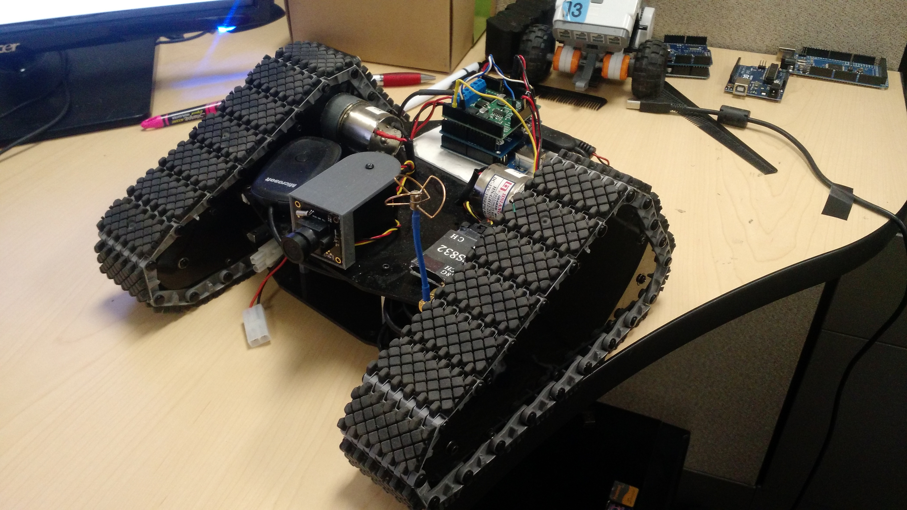

While an undergraduate researcher at the UNLV Robotics Lab, I was involved in a project that was investigating how to deliver payloads with a hexacopter UAV. I was tasked with building a remote-controlled vehicle with video feed to be used as the payload and building a cargo pay that would work autonomously. This was all done as a proof of concept.
Unmanned Ground Vehicle
The chassis was made of acrylic glass with two DC motors and rubber tread. The on-board computer was an Arduino Uno, and the live video feed was achieved with a pair of FPV goggles used for drones. Two Arduino shields were utilized: a Bluetooth shield for teleoperation with an Xbox controller and a motor driver shield. The camera mount was 3D printed and attached to a servo that was controlled by the Xbox controller.
The wire organization suffered due to time constraints.
Arduino code for the UGV
#include // Include Xbox Reciever Header From USB Host Shield Library
#include // Include servo header from Arduino built in servo library
#include "DualMC33926MotorShield.h" // Include motor shield from Dual MC33926 motor controller library
// Output Pins
#define _nD2 4
// Define Variables & Objects:
Servo camServo; // Create camera servo
DualMC33926MotorShield md; // Create motor shield object
USB Usb; // Create usb object
XBOXRECV Xbox(&Usb); // Create Xbox Receiver object
int servoPos = 90;
int motorSpeedR = 0;
int motorSpeedL = 0;
int joystickLHY; // Defines Left Joystick Y Values [ -32K - +32K ]
int joystickRHY; // Defines Right Joystick Y Values [ -32K - +32K ]
// Constants:
int camServo_min = 60; // max angle of the camera to it's right
int camServo_max = 120; // max angle of the camera to it's left
void setup()
{
Serial.begin(115200);
md.init();
camServo.attach(3);
camServo.write(servoPos);
pinMode(_nD2, OUTPUT);
digitalWrite(_nD2, LOW);
while (!Serial); // Wait for serial port to connect - used on Leonardo, Teensy and other boards with built-in USB CDC serial connection
if (Usb.Init() == -1)
{
Serial.println(F("\r\nOSC did not start"));
while (1); //halt
}
Serial.println(F("\r\n System Engaged"));
}
void loop()
{
Usb.Task();
if (Xbox.XboxReceiverConnected)
{
////////////////////////////Camera Servo Control////////////////////////////////
servoPos = camServo.read();
if(Xbox.getButtonPress(R2) > 100)
{
if(servoPos < camServo_max)
{
servoPos += 1;
}
}
else if (Xbox.getButtonPress(L2) > 100)
{
if(servoPos > camServo_min)
{
servoPos -= 1;
}
}
camServo.write(servoPos);
delay(15);
Serial.println(Xbox.getButtonPress(L2));
/////////////////////////Motor Control///////////////////////////////////////////////////
joystickLHY = Xbox.getAnalogHat(LeftHatY); // Define Joystick Left Hat Y Variable
joystickRHY = Xbox.getAnalogHat(RightHatY); // Define Joystick Right Hat Y Variable
motorSpeedR = map(joystickRHY, -32768, 32767, -400, 400);
motorSpeedL = map(joystickLHY, -32768, 32767, -400, 400);
if(abs(motorSpeedR) < 75 && abs(motorSpeedL) < 75){
digitalWrite(_nD2, LOW);
}
else {
digitalWrite(_nD2, HIGH);
md.setSpeeds(motorSpeedL, motorSpeedR);
}
Serial.print("Left Motor: "); Serial.print(motorSpeedL);
Serial.print(" Right Motor: "); Serial.println(motorSpeedR);
}
}
void stopIfFault()
{
if (md.getFault())
{
Serial.println("fault");
while(1);
}
}
Here is the UGV in operation.
Autonomous Cargo Bay
The autonomous cargo bay was pretty simple. A rigid cardboard box was utilized as the cargo bay. The cargo bay had a limit switch attached to the botoom, an Arduino mounted to the top, and a servo mounted to the top. Upon landing, the limit switch sends a signal to the Arduino which then commands the servo to rotate and allow the door to drop.
Here is a test run of the cargo bay's autonomous operation.
Arduino code for the Cargo Bay
#include
Servo doorServo; // create servo object to control a servo
int pos = 0; // variable to store the servo position
int limSwitch = 5;
void setup()
{
Serial.begin(9600);
doorServo.attach(3); // attaches the servo on pin 9 to the servo object
pinMode(pos, OUTPUT);
pinMode(limSwitch, INPUT);
}
void loop()
{
int pos = doorServo.read();
int switchState = digitalRead(limSwitch);
Serial.println(pos);
Serial.println(switchState);
if(switchState == HIGH)
{
doorServo.write(165);
}
else if(switchState == LOW)
{
doorServo.write(0);
}
delay(500);
}